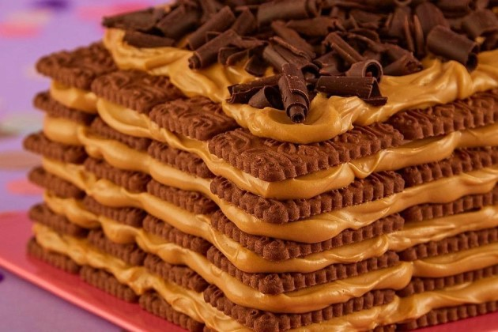

Recreando a Paulina Cocina
La mejor receta de Chocotorta
Ingredientes para una fuente mediana
- 400gr. de dulce de leche (si es repostero mejor, sino no importa).
- 400gr. de crema de leche o natilla.
- 750gr. de galletitas de chocolate.
- Leche o café para remojar las galletitas.
- 50gr. de chocolate semiamargo(cobertura o para taza)
- 50gr. de cacao en polvo.
Cómo hacer la chocotorta, paso a paso:
- Comenzar a el dulce de leche y cuando esté de un color más claro agregar la crema. Batir en el punto más bajo de la batidora hasta que esté a punto letra. Tener sumo cuidado en que no se pase del punto porque sino se corta!
Si por esas tragedias de la vida se llegase a cortar: agregarle un chorrito de crema e integrar. Reservar a un costado.
- Remojar cada galletita y colocar en una fuente hasta formar una capa. Colocar una capa de la crema de dulce de leche. Otra capa de galletitas humedecidas y así 4 veces.
- Llevar a enfriar por 1 hora en refrigerador.
- Espolvorear con cacao en polvo. Al servir, rallar un poco de chocolate amargo por encima y a ser felices y comer chocotorta!
